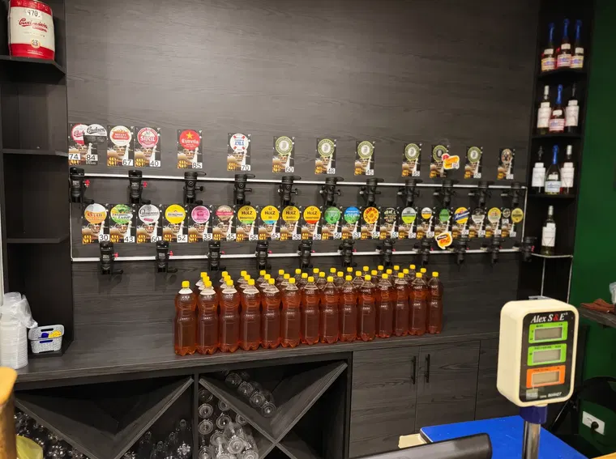

ГИД GYM BEER · КИШИНЁВ
Крафтовые пивоварни Молдовы: Holz, Beermaster и Götter
В Молдове выросла сильная школа крафтового и живого пивоварения. В GYM BEER Кишинёв представлены сразу все три ключевые пивоварни — разбираем, чем сильна каждая.

Keller Holz Privatbrauerei (Будешты, под Кишинёвом)
Немецкое оборудование Caspary и солод Weyermann. Сильная сторона — безупречная баварская классика (Munich Helles, Vienna Lager, Weissbier) и яркий HOLZ IPA 50 IBU.
Beermaster Brewery (Бельцы, с 1906 года)
Богатейшая история более века. Отлично удаются американские эли и смелый крафт: Beermaster IPA, Session IPA, American Pale Ale и вишнёвый Cherry Bock.
Götter (Кишинёв)
Живое пиво по чешской традиции. Популярны Götter Pilsner (фильтр./нефильтр.), авторский Götter München и ароматные крафтовые Götter IPA & Mosaic.
Краткое сравнение
| Пивоварня | Город | Сильные сорта |
|---|---|---|
| Keller Holz | Будешты / Кишинёв | Helles, Weissbier, Vienna Lager, IPA 50 IBU |
| Beermaster | Бельцы (с 1906) | IPA, Session IPA, American Pale Ale, Cherry Bock |
| Götter | Кишинёв | Живой Pilsner, München, Mosaic, IPA |
Можно ли найти все 3 молдавские пивоварни в одном магазине?
Да, в GYM BEER на Ботанике и Буюканах на кранах одновременно представлены сорта Keller Holz, Beermaster и Götter.
Где попробовать эти сорта в Кишинёве?
В магазинах GYM BEER на Ботанике (бул. Куза Водэ 1/4) и Буюканах (ул. Алба Юлия 23/2), ежедневно 10:00–22:00.
Другие полезные гиды: Живое нефильтрованное vs фильтрованное пиво · Helles vs Pilsner vs IPA и Weissbier · 5 правил, как сохранить разливное пиво в ПЭТ свежим · Как выбрать свежую копчёную рыбу · При какой температуре подавать каждое пиво